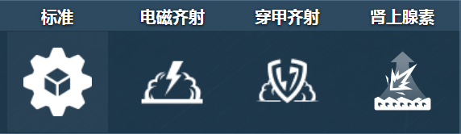
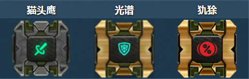
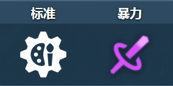
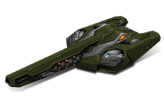
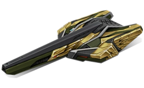
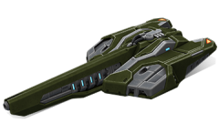

概括
电磁炮通过两种模式造成伤害 - 一种可以快速重新加载的标准伤害射击和一种对敌人造成重大伤害的高功率超级射击。
电磁炮能够像它的近亲雷暴炮一样造成溅射伤害，可以轻松地在附近偷走敌人并炸毁坦克。
然而，这款炮塔最大的优势在于没有锁定激光，可以快速连续发射超级射击，获得“
SNEAK 100”的称号。
车库中的描述
“高斯”加农炮诞生于油轮的车库中，他们正在寻找提高雷暴炮对狙击手的效能的方法。
他们发现，由于电磁效应，缠绕枪管的超导线会使射击产生巨大的加速度。
以这种方式发射的弹丸具有与轨道炮相似的射程，并发出特别响亮的爆炸声。
雷霆的这种“自制”改装，搭配现代瞄准和跟踪系统，
诞生了“高斯”加农炮——战场上机动性最强的狙击手。
当射手全速躲避敌人的火力时，“高斯”制导系统在最佳时刻独立进行准确射击。
这个炮塔的一个显着特点是天线，在电磁加速器准备射击时延伸。
该炮塔因其奇特的外观而被戏称为“大耳狙击手”。
装备改造

防御模块

射击效果

皮肤
激光炮标准

青春电磁炮

电磁炮 XT

电磁炮超高